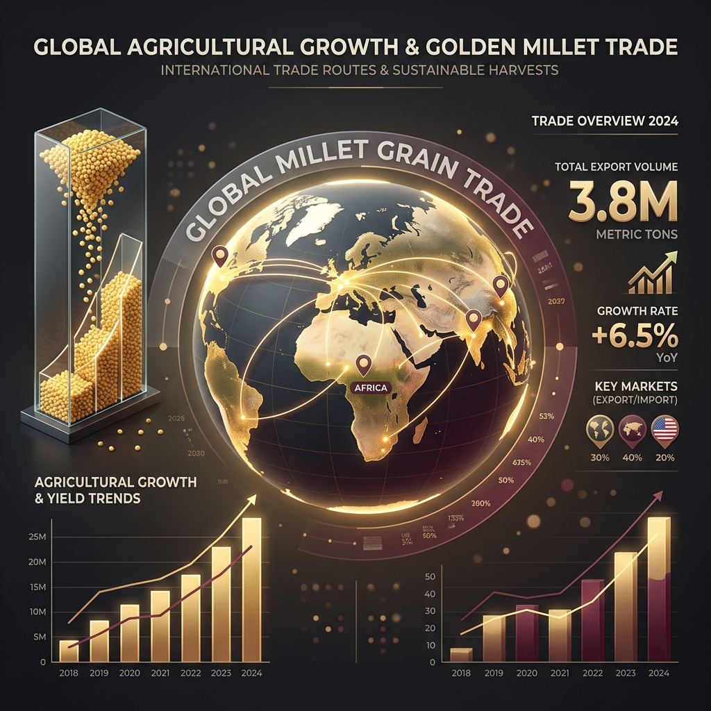

The Global Millet Market Just Hit USD 44 Billion. Here is What That Number Actually Means.
I came across a market report this week that stopped me mid-scroll. The global millet market, valued at USD 42.27 billion in 2025, is now projected to reach USD 73.25 billion by 2034, growing at over 13% annually.
The global millet market, which was valued at USD 42.27 billion in 2025, is now projected to reach USD 73.25 billion by 2034. Another major research firm puts the figure even higher, estimating the market will touch USD 64.2 billion by 2036, growing at a rate of 13.4 percent annually over the next decade.
To put that in perspective, that is the kind of growth rate usually associated with technology sectors, not agricultural commodities. And yet here we are, talking about a grain that Indian farmers have been quietly growing for over 5,000 years.
I find that both remarkable and deeply satisfying.
What is driving numbers this large
When a market grows this fast, there is rarely a single cause. What the data shows is that several forces are moving in the same direction at the same time, which is what creates sustained growth rather than a temporary spike.
1. Consumer Demand Acceleration
Rising international preference for low-glycemic and gluten-free dietary choices is pulling millet into product categories that previously belonged entirely to wheat and rice. According to the International Crops Research Institute for the Semi-Arid Tropics (ICRISAT), annual global millet consumption already reached approximately 30 million tonnes in 2024. That is not a niche number. That is a staple food volume.
2. FMCG & Enterprise Food Company Investment
Large FMCG companies are actively entering the millet segment, incorporating millet ingredients into conventional bakery items, breakfast cereals, and snacks to reach health-conscious consumers. When enterprise food manufacturers move into a category, retail distribution follows, consumer awareness grows, and procurement volumes increase at every level of the supply chain.
3. Government Policy Alignment
The Indian government launched the Production Linked Incentive Scheme for Millet-based Products with a budget of approximately USD 96.8 million running through 2026-27. The UN International Year of Millets in 2023 created global awareness that is still driving procurement decisions today. Governments and international development agencies are actively promoting millet consumption to support food security and climate adaptation objectives.
The numbers that matter most for buyers right now
If you are a food manufacturer, importer, or brand making sourcing decisions, here are the specific data points worth knowing:
- Global Production Volume: Global millet production is expected to surpass 42 million metric tons in 2026.
- Bulk Pricing Range: International bulk pricing currently ranges between USD 280 and USD 430 per metric ton depending on processing grade (Machine Cleaned vs. Sortex) and export origin.
- Pearl Millet Dominance: Pearl Millet (Bajra) alone is projected to account for 40 percent of total product type demand this year, reflecting its position as the most widely cultivated and commercially traded millet variety globally.
The packaged food segment within this broader market is growing particularly fast. The global millet-based packaged food market is projected to grow from USD 44.39 million in 2025 to USD 75.73 million by 2031, driven largely by pasta, bakery products, and ready-to-eat snacks. Millet baby foods are expanding rapidly as pediatricians and nutritionists increasingly recommend millets for infants beginning solids, particularly across Asia and Africa.
And geographically, the Middle East, Southeast Asia, and Europe are becoming increasingly important import regions, with buyers in these markets prioritizing long-term procurement agreements and sustainable sourcing partnerships.
What India's role is in all of this
India is not watching this growth from the sidelines. India exported 89,164 tonnes of millets in 2025, a figure that reflects the direct impact of policies connecting local Indian agriculture to global retail supply chains. India dominates global millet production and grows multiple varieties year-round across stable inland farming states.
The Indian government's five-year strategic plan to promote millets internationally actively involves Indian missions abroad and engagement with global retail networks including Carrefour, Walmart, and Lulu Group. The infrastructure to move Indian millets from farm to international shelf is not being built. It is already built and operating.
What this means if you are reading this as a buyer
The window between "this is an interesting emerging category" and "prices have gone up because everyone is buying it" is closing. The data shared above is not speculative. It is current market research from multiple independent sources pointing in the same direction.
Buyers who establish reliable Indian millet supply relationships now, at current pricing, with a trusted export partner, are the ones who will be best positioned as mainstream demand continues to grow through 2026 and beyond.
Partnering with SNS Global Traders
At SNS Global Traders, we export the full range of Indian millets including Finger Millet (Ragi), Pearl Millet (Bajra), Foxtail Millet (Thinai), Kodo Millet (Varagu), Barnyard Millet (Kuthiraivali), and Browntop Millet. All machine-cleaned, sortex processed, APEDA certified, and packed to your specification.
We offer a free 500g physical sample kit before any commercial commitment and respond to every inquiry personally. If these numbers have you thinking more seriously about your millet sourcing strategy, I would be glad to hear from you.

Market Research Sources
- Fortune Business Insights, Millet Market Report 2026
- Future Market Insights, Global Millet Market Forecast 2026-2036
- Globe Newswire, Millet Based Packaged Food Market Report 2026
- International Crops Research Institute for the Semi-Arid Tropics (ICRISAT)
- Feeding Ingredients Asia, Millet Buyer Trends 2026